Fitting of spatio-chromatic temporal Gabor and Disc datasets
Fitting error
Model parameters
castleCSF-rkm38
M_lms2acc =
1.0000 1.0000 0
1.0000 -2.0446 0
-1.0000 -1.0000 21.6476
p.rg.sigma_sust = 16.095;
p.rg.beta_sust = 1.14362;
p.rg.ch_sust.S_max = [ 3953.95 35.1818 0.482839 ];
p.rg.ch_sust.f_max = 0.000367234;
p.rg.ch_sust.bw = 3.09557;
p.rg.A_0 = 103.861;
p.rg.f_0 = 0.403997;
p.yv.sigma_sust = 6.39534;
p.yv.beta_sust = 1.09443;
p.yv.ch_sust.S_max = [ 423.597 76.585 0.305939 ];
p.yv.ch_sust.f_max = 0.00238313;
p.yv.ch_sust.bw = 2.85665;
p.yv.A_0 = 3.26887e+07;
p.yv.f_0 = 0.000582967;
p.ach.ach_sust.S_max = [ 70.8568 80.0247 0.121043 7.33519e-07 8.7382e+09 ];
p.ach.ach_sust.f_max = [ 1.51615 23.8839 0.286019 ];
p.ach.ach_sust.bw = 0.000218669;
p.ach.ach_sust.a = 0.315362;
p.ach.ach_trans.S_max = [ 0.484543 64.2933 ];
p.ach.ach_trans.f_max = 0.0339245;
p.ach.ach_trans.bw = 1.65072;
p.ach.ach_trans.a = 0.000273289;
p.ach.sigma_trans = 0.116284;
p.ach.sigma_sust = 2.38133;
p.ach.ecc_drop = 0.0436259;
p.ach.ecc_drop_nasal = 0.0404395;
p.ach.ecc_drop_f = 0.0144669;
p.ach.ecc_drop_f_nasal = 0.00863558;
p.colmat = [ 2.04461 0 0 21.6476 ];
Parameters for Ach component:
p.ach_sust.S_max = [ 70.8568 80.0247 0.121043 7.33519e-07 8.7382e+09 ];
p.ach_sust.f_max = [ 1.51615 23.8839 0.286019 ];
p.ach_sust.bw = 0.000218669;
p.ach_sust.a = 0.315362;
p.ach_trans.S_max = [ 0.484543 64.2933 ];
p.ach_trans.f_max = 0.0339245;
p.ach_trans.bw = 1.65072;
p.ach_trans.a = 0.000273289;
p.sigma_trans = 0.116284;
p.sigma_sust = 2.38133;
p.ecc_drop = 0.0436259;
p.ecc_drop_nasal = 0.0404395;
p.ecc_drop_f = 0.0144669;
p.ecc_drop_f_nasal = 0.00863558;
Parameters for RG component:
p.ch_sust.S_max = [ 3953.95 35.1818 0.482839 ];
p.ch_sust.f_max = 0.000367234;
p.ch_sust.bw = 3.09557;
p.A_0 = 103.861;
p.f_0 = 0.403997;
p.sigma_sust = 16.095;
p.beta_sust = 1.14362;
p.ecc_drop = 0.0296662;
p.ecc_drop_nasal = 0.0113638;
p.ecc_drop_f = 0.0190062;
p.ecc_drop_f_nasal = 0.0193858;
Parameters for YV component:
p.ch_sust.S_max = [ 423.597 76.585 0.305939 ];
p.ch_sust.f_max = 0.00238313;
p.ch_sust.bw = 2.85665;
p.A_0 = 3.26887e+07;
p.f_0 = 0.000582967;
p.sigma_sust = 6.39534;
p.beta_sust = 1.09443;
p.ecc_drop = 0.0296662;
p.ecc_drop_nasal = 0.0113638;
p.ecc_drop_f = 0.0190062;
p.ecc_drop_f_nasal = 0.0193858;
stelaCSF
p.ach_sust.S_max = [ 50.417 35.7692 0.171289 6.94712e-07 7.68599e+09 ];
p.ach_sust.f_max = [ 1.47303 15.0117 0.262115 ];
p.ach_sust.bw = 0.000220367;
p.ach_sust.a = 0.0376675;
p.ach_trans.S_max = [ 0.477524 32.3439 ];
p.ach_trans.f_max = 0.0679166;
p.ach_trans.bw = 1.41551;
p.ach_trans.a = 0.000273289;
p.sigma_trans = 0.117273;
p.sigma_sust = 2.08109;
p.ecc_drop = 0.0329748;
p.ecc_drop_nasal = 0.0331355;
p.ecc_drop_f = 0.0161639;
p.ecc_drop_f_nasal = 0.00996792;
Legend
To keep the plots legible, only up to 3 models are plotted.
↸Dataset: [modelfest] ModelFest
Achromatic CSF as a function of frequency
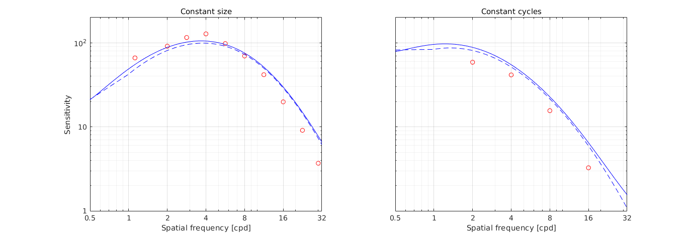
↸Dataset: [hdrvdp_csf] HDR-VDP CSF
Achromatic CSF as a function of frequency

Achromatic CSF as a function of size
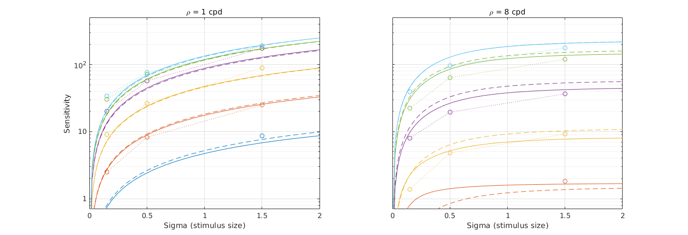
↸Dataset: [rovamo1993] Rovamo et al. 1993
CSF as the funcation of stimulus area

↸Dataset: [laird2006] Laird et al. 2006
Achromatic CSF as a function of temporal frequency for different spatial frequencies
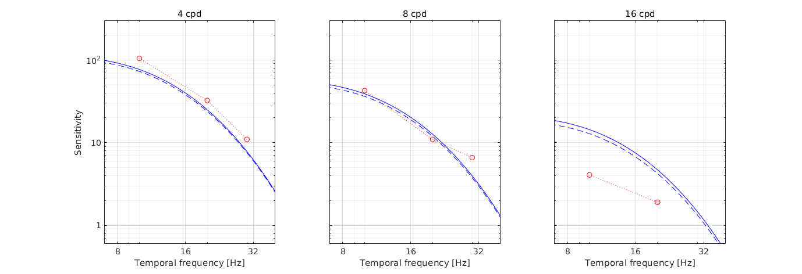
↸Dataset: [snowden1995] Snowden et al. 1995
Temporal contrast sensitivity at different spatial frequencies and luminance levels
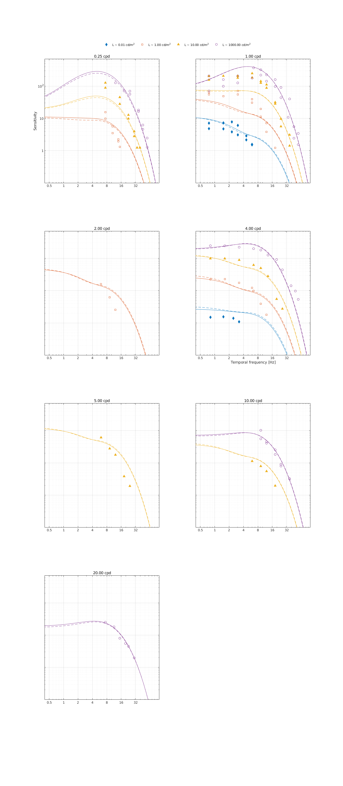
↸Dataset: [robson1966] Robson 1966
Spatial CSF for different temporal frequencies
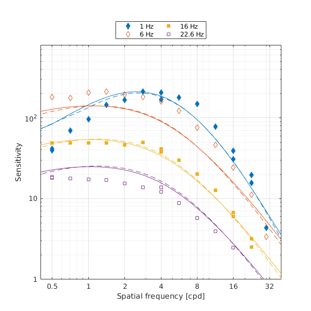
Temporal CSF for different spatial frequencies
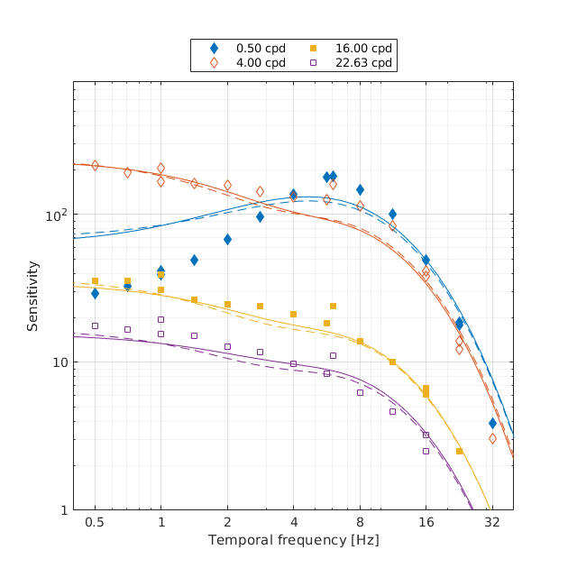
↸Dataset: [virsu1979] Virsu & Rovamo 1979
Contrast sensitivity of central and peripheral vision as a function of spatial frequency and eccentricity
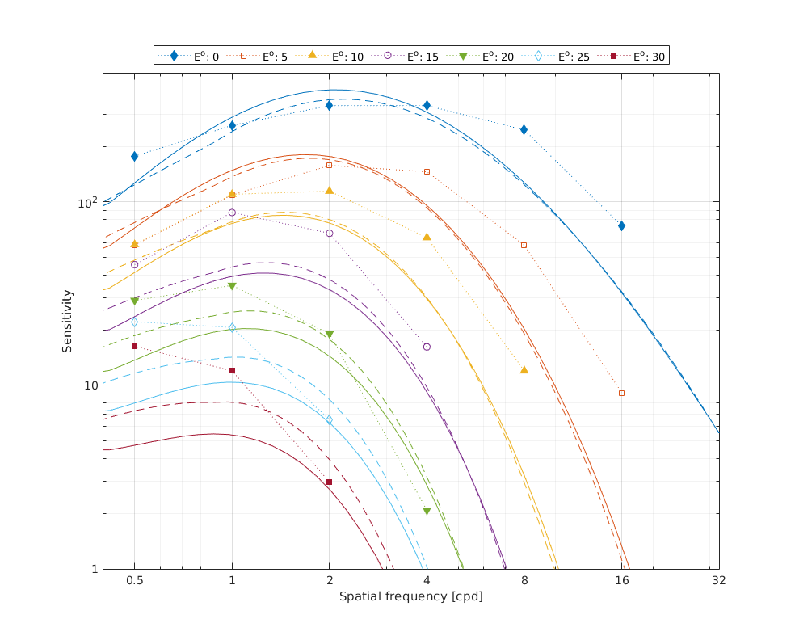
↸Dataset: [virsu1982] Virsu et al. 1982
Contrast sensitivity as the function of frequency

Contrast sensitivity as the function of eccentricity
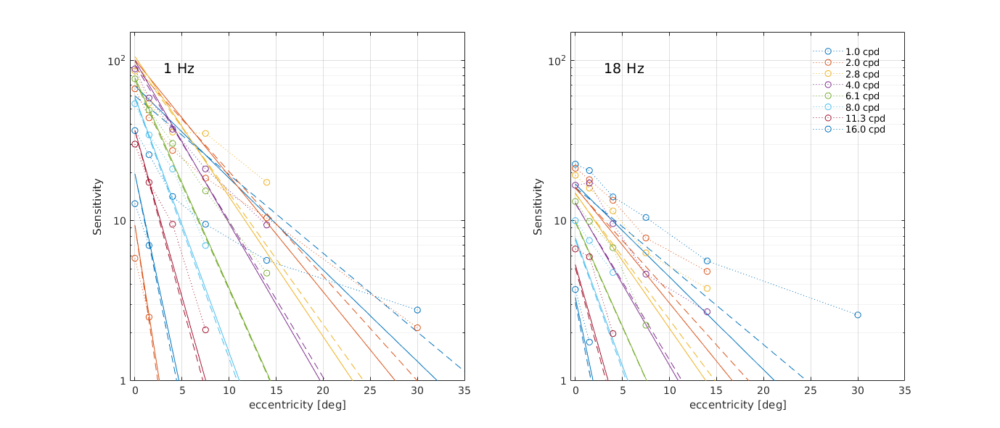
↸Dataset: [wright1983] Wright and Johnson 1983
CSF as function of eccentricity
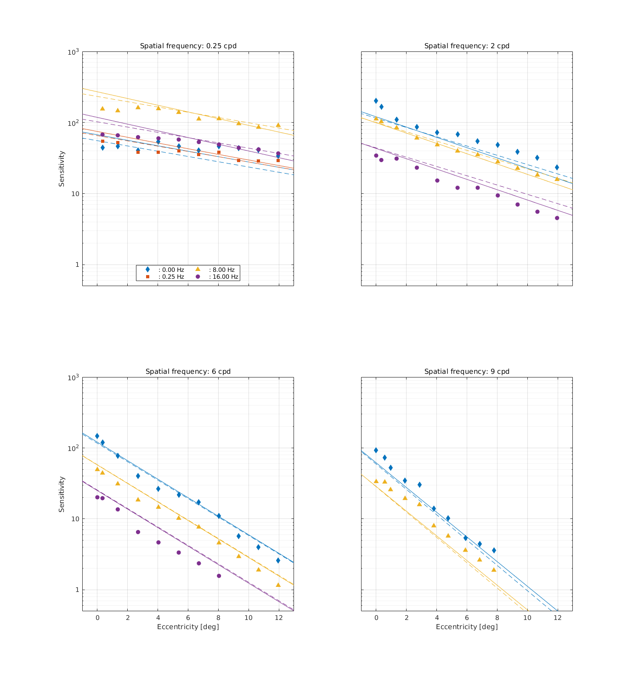
↸Dataset: [hdr_csf] High Dynamic Range CSF
CSF as the function of frequency at different luminance levels (fixed number of cycles)
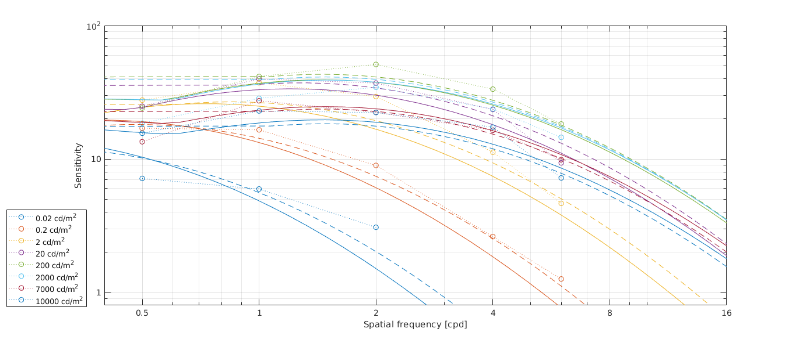
CSF for different number of cycles
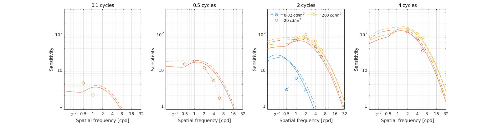
↸Dataset: [hdr_csf_disc] High Dynamic Range Disc CSF
CSF as the function of size at different luminance levels
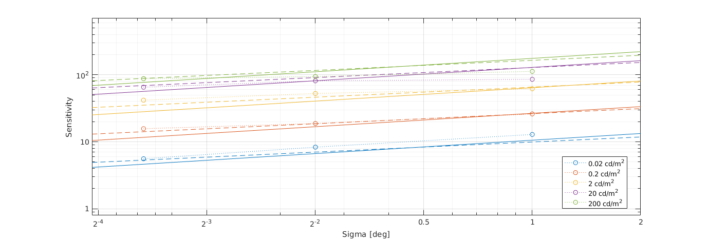